Canción de Hielo y Fuego · Casa Targaryen
Dragones
de Poniente
«El fuego no negocia. Es la única cosa que un Targaryen no puede perder del todo.»
Desplázate
Bestiario
Fichas de dragones
Los dragones que la historia recuerda no fueron bestias salvajes, sino armas con alas. Estos son los que cambiaron el rumbo de Poniente.
-

Drogon
El Negro
- Jinete
- Daenerys Targaryen
- Casa
- Targaryen
- Color
- Negro con alas rojas
- Tamaño
- El mayor de los tres
El más grande y el más salvaje de los tres. Nació en la pira funeraria de Khal Drogo, al final de la primera temporada, y creció hasta convertirse en el terror de los muros de Desembarco del Rey. Fue el último dragón vivo de la serie, y con el vientre de su jinete alzó el único vuelo del que nadie vio el aterrizaje.
Recibe su nombre en honor a Khal Drogo, su primer esposo.
-
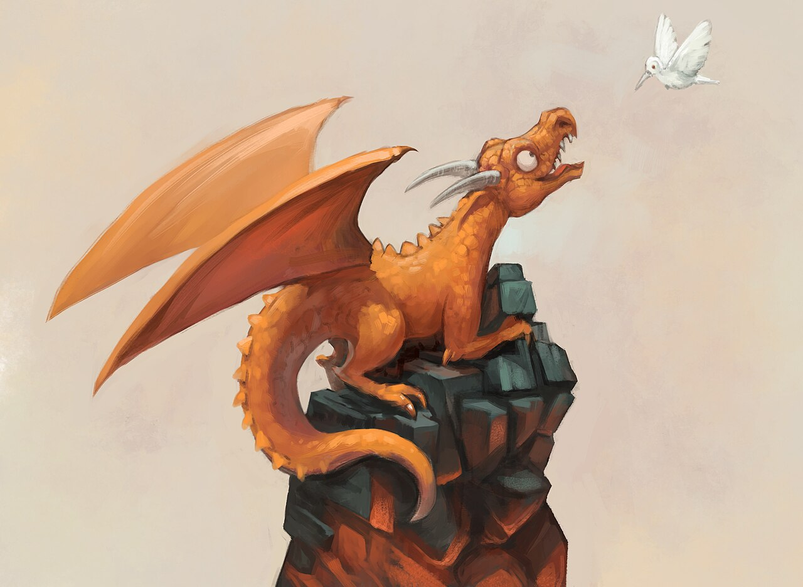
Rhaegal
El Verde y Veloz
- Jinete
- Daenerys Targaryen
- Casa
- Targaryen
- Color
- Verde esmeralda
- Notable
- El más rápido en vuelo
El más ágil de los tres. En la serie llegó a volar con dos jinetes: Daenerys y Jon Snow, que lo montó en la Batalla de la Invernalia. Murió abatido por el ballestón de Euron Greyjoy en el Mar Angosto, un golpe del que la reina nunca se recuperó.
Nombrado en memoria de Rhaegar Targaryen, el hermano mayor de Daenerys.
-
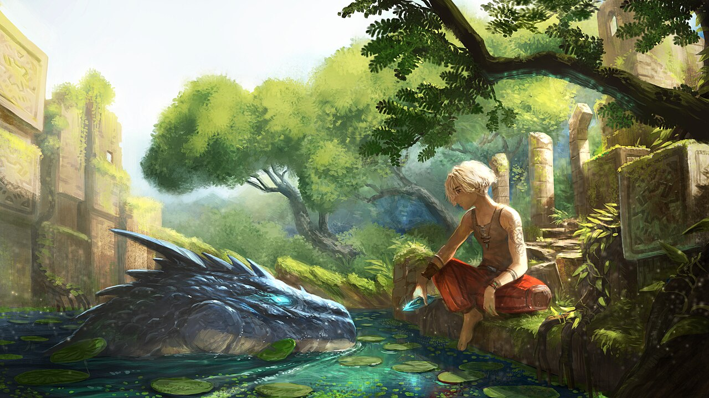
Viserion
El Blanco
- Jinete
- Daenerys Targaryen
- Casa
- Targaryen
- Color
- Blanco y dorado
- Huso
- Reanimado por el Rey de la Noche
El más pequeño de los tres, y el que vivió la historia más trágica de todos. En la serie lo mató una lanza de hielo del Rey de la Noche, que lo resucitó como dragón de hielo y lo usó para derribar el Muro. Murió de forma definitiva cuando Arya Stark acabó con su creador.
Libros y serie: en las novelas Viserion sigue vivo y jamás fue resucitado. Esta ficha describe la versión de la serie, que se inspira en la leyenda de los dragones de hielo del terror del Norte.
-
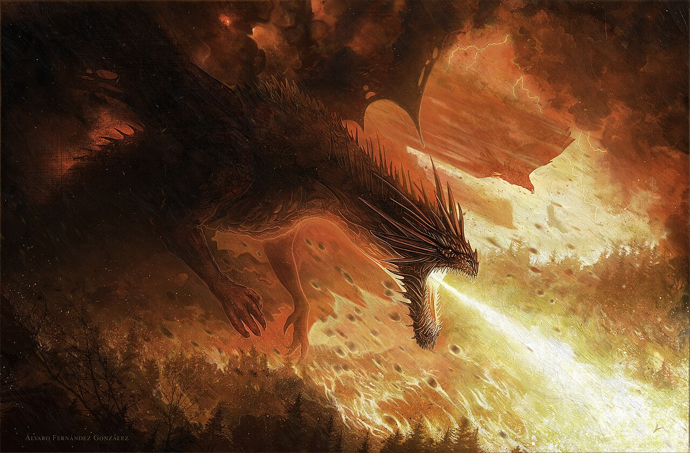
Balerion
La Peste Negra
- Jinete
- Aegon el Conquistador
- Casa
- Targaryen
- Color
- Negro
- Tamaño
- El mayor de todos los tiempos
El dragón más grande jamás montado por un mortal: su sombra oscurecía campos de cultivo enteros. Sobrevivió a la Maldición de Valyria y sirvió durante la Conquista, cuando su aliento derritió los muros de Harrenhal. Murió de viejo en el Foso de los Dragones en el año 94 d. C., y su calavera se conservó en la Fortaleza Roja.
Fue una de las tres bestias de la Conquista junto a Vhagar (de Visenya) y Meraxes (de Rhaenys).
-

Vermithor
La Furia de Bronce
- Jinete
- Jaehaerys I Targaryen
- Casa
- Corona Targaryen
- Color
- Bronce y dorado
- Alias
- La Furia de Bronce
Fue el dragón del rey Jaehaerys I durante su largo y pacífico reinado, en el que casi nunca se usó como arma. Tras la muerte del rey durmió en Rocadragón durante décadas, hasta que en la Danza de los Dragones fue reclamado por Hugh Hammer.
En los libros encontró la muerte en la Segunda Batalla de Tumbleton; en la serie Casa del Dragón se le ve ser reclamado en la segunda temporada.
-
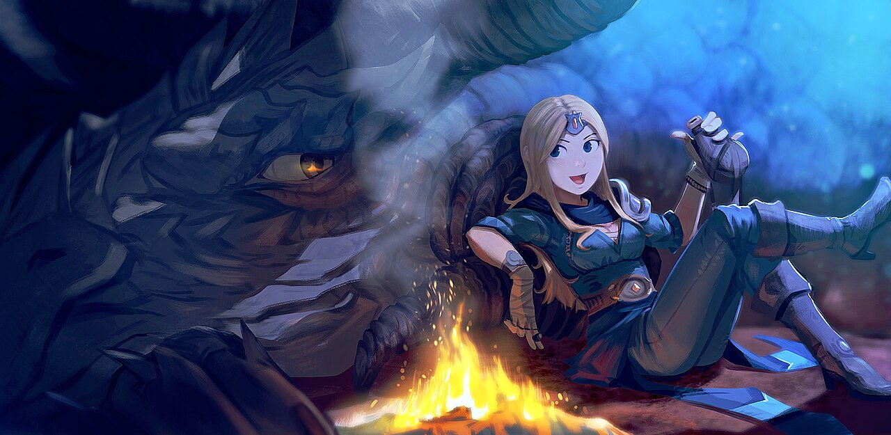
Syrax
La dragona de Rhaenyra
- Jinete
- Rhaenyra Targaryen
- Casa
- Targaryen
- Color
- Amarillo y dorado
- Fuente
- Casa del Dragón
Amarilla y enorme, fue la única jinete de la princesa Rhaenyra desde que ambas eran niñas. Fue con Syrax con quien Rhaenyra cremó a su madre, la reina Aemma, y la dragona la acompañó hasta el final durante la Danza de los Dragones.
Debe su nombre a la diosa valyria Syrax. En los libros muere en el motín del Foso de los Dragones de Desembarco del Rey.
Ningún dragón coincide con tu búsqueda.
Cortes y jinetes
Personajes
Quienes montaron a los dragones, los criaron o los sufrieron. Todas las fichas señalan de qué época y serie proceden, porque Canción de Hielo y Fuego y Casa del Dragón comparten mundo pero no tiempo.
-
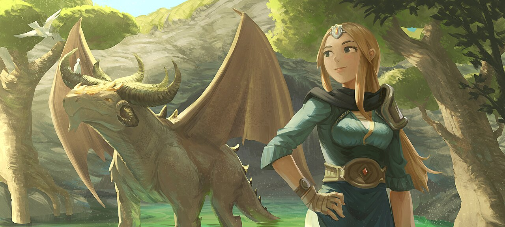
Daenerys Targaryen
La Madre de los Dragones
- Casa
- Targaryen
- Jinete
- Drogon
- Título
- Reina de Meereen y de Poniente
- Época
- Canción de Hielo y Fuego
Exiliada, vendida como esposa y convertida en madre de tres dragones nacidos de una pira funeraria. Liberó esclavos, cruzó el Mar Angosto y desciende sobre Desembarco del Rey con la promesa de romper la rueda: una promesa que termina en llamas.
En la serie la interpretó Emilia Clarke. Su eslogan, «Fuego y sangre», es el lema de su casa.
-
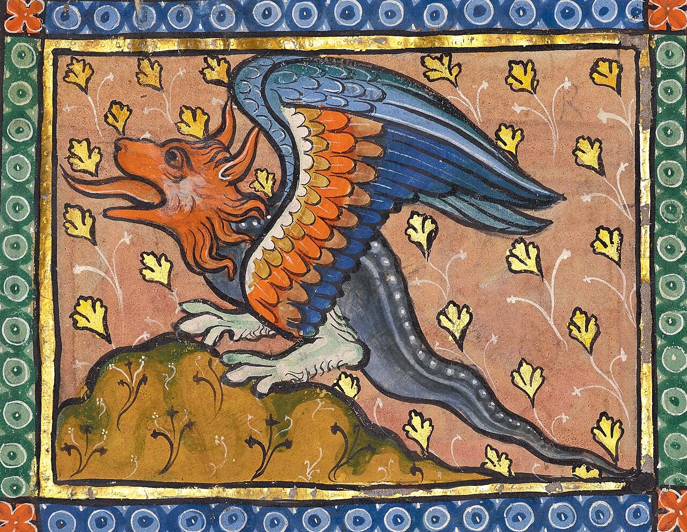
Jon Snow
El Guardián de los Muros
- Casa
- Stark (revelado Targaryen)
- Jinete
- Rhaegal
- Título
- Rey del Norte
- Época
- Canción de Hielo y Fuego
Criado como bastardo de Invernalia, llegó a Lord Comandante de la Guardia de la Noche y a Rey del Norte. En la serie se revela que su nombre verdadero es Aegon Targaryen, y fue él quien montó a Rhaegal en la batalla contra el Rey de la Noche.
Su lobo huargo Fantasma y su espada Lamentación lo acompañan desde Invernalia.
-
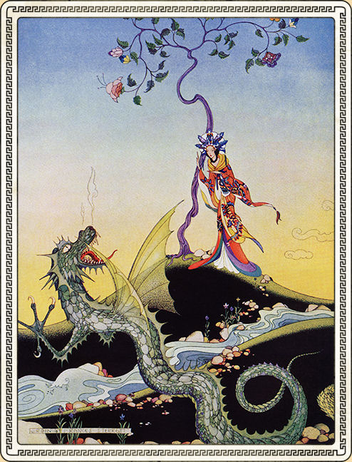
Tyrion Lannister
La Mano del Rey
- Casa
- Lannister
- Jinete
- Nunca montó uno
- Título
- Mano de la Reina
- Época
- Canción de Hielo y Fuego
El más pequeño de los Lannister y, según él mismo, el único con entendimiento. Liberó a Rhaegal y a Viserion de sus cadenas en Meereen y llegó a tocarles el morro sin ser atacado: la primera Mano del Rey que los dragones aceptaron cerca.
En la serie lo interpretó Peter Dinklage. Fue de los pocos que entendió que un dragón no es un arma, sino una decisión.
-
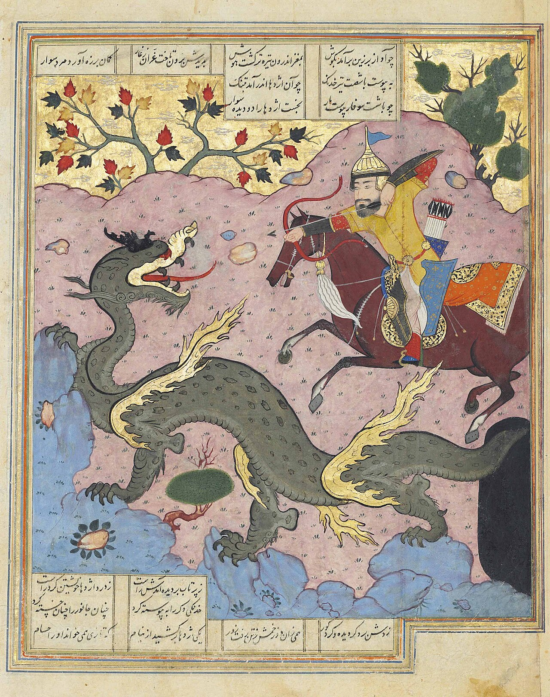
Aegon el Conquistador
El primer rey
- Casa
- Targaryen
- Jinete
- Balerion
- Título
- Rey de los Siete Reinos
- Época
- La Conquista
Desembarcó con dos hermanas-jinetes y tres dragones y derritió el mapa de Poniente en el 1 a. C. Fundó el Trono de Hierro forjando las espadas de sus enemigos rendidos y coronó a su casa para casi trescientos años de reinado.
Su corona, el Aegonfort y el Trono de Hierro siguen siendo el símbolo de lo que el fuego Targaryen construyó —y lo que no debe volver a repetirse.
-
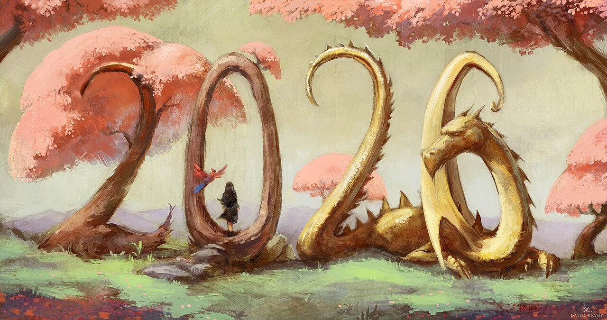
Rhaenyra Targaryen
La Reina Dragona
- Casa
- Targaryen
- Jinete
- Syrax
- Título
- Reina rival en la Danza
- Época
- Casa del Dragón
Hija de Viserys I y heredera nombrada del Trono de Hierro. Montó a Syrax desde niña y encabezó el bando negro en la guerra civil que partió Poniente en dos. Su reinado no duró un año: terminó devorada por el dragón de su hermanastro, apenas dos años después de que Vhagar se hubiera comido a su hijo Lucerys.
En la serie la interpretaron Milly Alcock (joven) y Emma D'Arcy (adulta). Es el personaje central de Casa del Dragón.
-
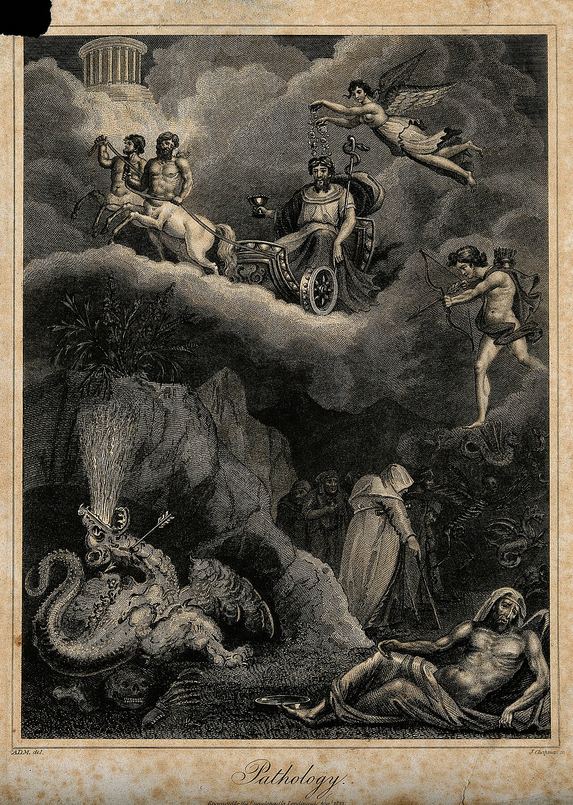
Daemon Targaryen
El Príncipe Canalla
- Casa
- Targaryen
- Jinete
- Caraxes
- Título
- Príncipe y consorte
- Época
- Casa del Dragón
El tío y segundo marido de Rhaenyra, tan temerario como leal. Montaba a Caraxes, el Gusano de Sangre, un dragón rojo tan violento como él. Durante la Danza libró la batalla más letal del siglo: un duelo a dragon contra dragon sobre Ojo de Dioses.
En la serie lo interpreta Matt Smith. Fue él quien mantuvo viva en la corte la profecía del príncipe que fue prometido.
-
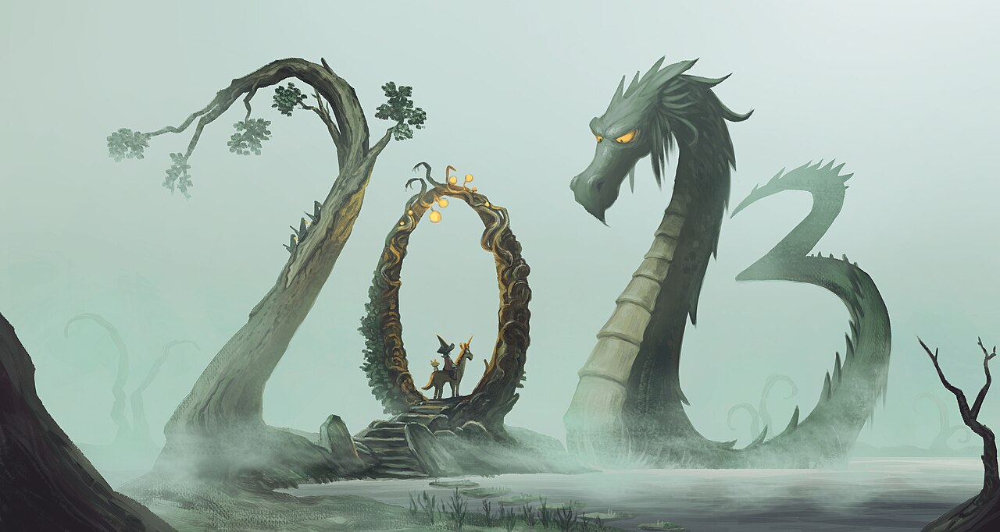
Jorah Mormont
El Caballero Exiliado
- Casa
- Mormont
- Jinete
- Ninguno
- Título
- Consejero de Daenerys
- Época
- Canción de Hielo y Fuego
Exiliado de Poniente por vender cazadores furtivos, encontró en el servicio a Daenerys una causa que lo redimió. Fue su consejero más fiel desde el Mar Dothraki hasta Invernalia, y en la serie la siguió al Foso de los Dragones de Meereen, donde la salvó de las cadenas de los Hijos de la Arpía.
En la serie lo interpretó Iain Glen. Murió defendiendo a su reina en la Batalla de Invernalia.
-
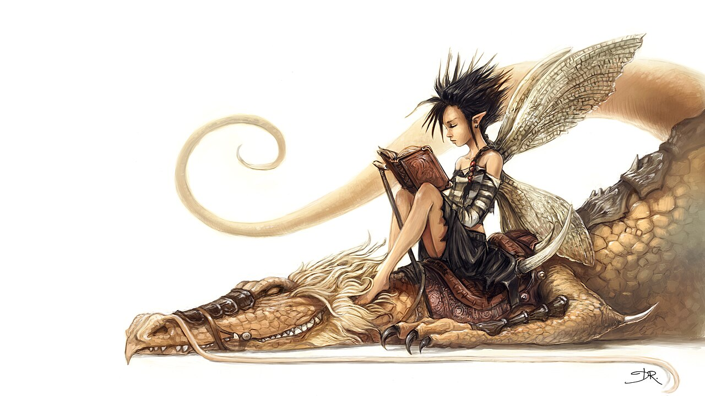
Viserys Targaryen
El Rey Mendigo
- Casa
- Targaryen
- Jinete
- Ninguno
- Título
- Autoproclamado rey
- Época
- Canción de Hielo y Fuego
El hermano mayor de Daenerys que vendió a su hermana a cambio de un ejército. Conocido como el Rey Mendigo por sus súbditos exiliados, murió con la corona de oro fundida que él mismo exigió, y su muerte fue la verdadera primera llama de los tres dragones.
Los nombres que Daenerys daría a sus dragones —Viserion, Rhaegal, Drogon— honran a él, a Rhaegar y a Drogo.
Ningún personaje coincide con tu búsqueda.
Línea de tiempo
Cronología del fuego
Ocho momentos que explican cómo una familia exiliada de Valyria pasó a gobernar Poniente, y por qué todo el mundo recuerda cómo termina.
-
c. 126 a. C.
La huida de Valyria
La Casa Targaryen se traslada a Rocadragón huyendo de las Catorce Ciudades. Doce años después, la Maldición los convertirá en la única dinastía de jinetes de dragón que queda en el mundo.
-
c. 114 a. C.
La Maldición de Valyria
El Vertido de la Montaña Profunda cubre de fuego al Imperio Valyrio. Balerion, Vhagar y Meraxes sobreviven volando sobre el mar hasta su isla volcánica: comienza la era del dragón al servicio de una sola casa.
-
2 a. C.
El Desembarco del Rey
Aegon Targaryen desembarca con Balerion, Vhagar y Meraxes en la boca del Rio Negro. Construye la Torre de la Alegría, pequeña fortaleza de madera, y proclama que Poniente tendrá un solo rey.
-
1 a. C.
Harrenhal arde
Durante el asedio de la fortaleza del Rey de las Islas, Balerion derrite los muros de Harrenhal de un solo aliento. Es el golpe que convierte el fuego Targaryen en arma de Estado.
-
2 a. C.–3 d. C.
La Conquista
Aegon el Conquistador somete seis de los Siete Reinos en apenas un año de guerra. En el 2 d. C. levanta el Aegonfort sobre la casa de la Torre de la Alegría y se corona como primer rey, dando inicio a trescientos años de dinastía Targaryen.
-
129–131 d. C.
La Danza de los Dragones
La guerra civil entre Rhaenyra y Aegon II enfrenta por primera vez a dragon contra dragon. Cuando termina, casi todas las bestias de Poniente han muerto, incluidas Syrax, Vermithor, Caraxes y Vhagar.
-
298–305 d. C.
Daenerys y los tres huevos
Tras la muerte de Viserys, Daenerys entra en la pira funeraria del Khal Drogo y de ella nacen Drogon, Rhaegal y Viserion. Poniente descubre que el fuego Targaryen no había muerto: sólo estaba esperando.
-
305 d. C.
El descenso sobre Desembarco del Rey
De regreso en Poniente, Daenerys toma Meereen y desciende sobre la capital, donde Drogon quema la Armada de Hierro y los ejércitos de la Reina. Es la última gran batalla de la Edad de los Dragones, y la que fractura la casa para siempre.
Galería
Escenas del mundo Targaryen
Haz clic en cualquier escena para verla en grande.
-
Valyria en llamas
-
El Desembarco del Rey
-
Rocadragón
-

La Danza de los Dragones
-
El Invierno del Norte
-
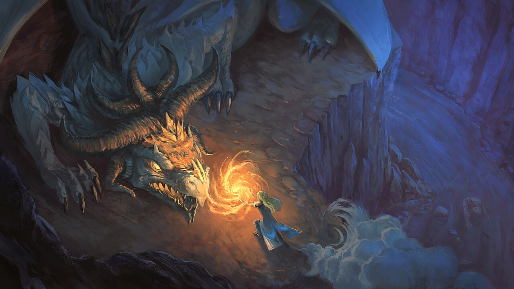
Harrenhal
-
Los huevos del desierto
-
La Larga Noche
En números
Poniente en cifras
- 0Dragones de Daenerys Targaryen
- 0Años de dominio Targaryen
- 0Años para unificar Poniente
- 0Dragones destacados aquí
- 0Personajes destacados